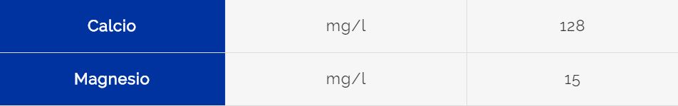

Home
Durezza
Residuo Fisso
Metaemoglobinemia
Rubinetto o bottiglia?
Durezza
La durezza totale è la somma dei sali di metalli alcalini e alcalino-terrosi presenti nell'acqua, in particolare di calcio 2+ e magnesio 2+ che sono i più abbondanti.
Durezza dell'acqua della mia zona: 38°F
L'acqua della mia zona è un acqua molto dura.
Valori di calcio e magnesio disciolti nell'acqua:
